LaTeX
Inhaltsverzeichnis |
[Bearbeiten] Übersicht
Die meisten modernen Texte werden am Computer mit Textverarbeitungsprogrammen wie Word oder OpenOffice geschrieben. Diese haben jedoch erhebliche Probleme mit mathematischen Formeln. Einzelne Zeichen kann man zwar aus einer Liste auswählen, gesamte Formeln sehen jedoch nicht wirklich ordentlich aus. Hier kommt LaTeX ins Spiel: Das Programm übersetzt über einen Compiler eine Textdatei mit Befehlen in ein Grafikformat wie PostScript oder PDF.
Übrigens: Wer z.B. keinen Compiler installieren kann oder will, kann auf diesen Onlinedienst zurückgreifen: http://nirvana.informatik.uni-halle.de/~thuering/php/latex-online/latex.php
[Bearbeiten] Erste Schritte
Als erstes erstellt man mit einem Texteditor (vorzugsweise einem Editor, der Syntaxhighlighting für LaTeX beherrscht) die Datei name.tex. In diese schreibt man dann die folgenden paar Zeilen:
% Das ist die Datei name.tex \documentclass[12pt]{article} \usepackage[utf8]{inputenc} \usepackage[T1]{fontenc} \usepackage[ngerman]{babel} \usepackage{amsmath} \title{Einführung in LaTeX} \author{Florian Edelmann} \date{23. März 2010} \begin{document} \maketitle \tableofcontents \section{Einführung} Hier kommt die \textit{Einführung}. Die \textbf{Überschrift} wird automatisch im Inhaltsverzeichnis aufgelistet. \subsection{Eine Formel} Hier ist eine Formel, mit \LaTeX{} ist das kein Problem: \(x=\sqrt{y^2*2}\) \end{document}
Sobald diese Datei mit dem Befehl latex name.tex kompiliert wurde, sieht sie so aus:
[Bearbeiten] Syntax
Alle Befehle beginnen mit einem Backslash \.
Als erstes werden dokumentweite Einstellungen definiert und Pakete eingebunden. Das geht mit \documentclass[12pt]{Klasse} und \usepackage[optional]{Paket}. Die Texte in den geschweiften Klammern {...} sind dabei Parameter, die ausgefüllt werden müssen, die Parameter in den eckigen Klammern [...] sind optional. Anstatt von Klasse setzt man einen der folgenden Werte ein:
| scrartcl | für Artikel, Vorträge, Praktikumsarbeiten, Seminararbeiten, kürzere Berichte, Anträge, Gutachten, Programmbeschreibungen, Einladungen u.v.a. |
|---|---|
| scrreprt | für längere Berichte, die aus mehreren Kapiteln bestehen, Diplomarbeiten, Dissertationen, Skripte u.ä. |
| scrbook | für Bücher |
| scrlttr2 | für Briefe |
| slides | für Präsentationsfolien |
Ein Zeilenumbruch in der .tex-Datei bewirkt keinen Zeilenumbruch in der Ausgabe! Eine Leerzeile oder ein Doppelbackslash \\ bewirken einen neuen Absatz. Wenn man das Paket babel mit ngerman importiert hat, kann man Umlaute unabhängig von der Kodierung mit Anführungsstrichen darstellen (z.B. wird "a zu ä).
Alles, was zwischen \begin{document} und \end{document} steht, ist der Text, der angezeigt wird. Der Befehl \maketitle bewirkt die Überschrift, \tableofcontents erzeugt ein automatisches Inhaltsverzeichnis, das aus den Abschnitten (\section{...} und \subsection{...}) generiert wird.
Für Textauszeichnungen benutzt man die folgende Syntax: \textit{...} (kursiv)
Innerhalb eines Absatzes werden mathematische Textteile zwischen runden Klammern mit Backslash \(...\) eingeschlossen. Zwischen eckigen Klammern mit Backslash \[...\] bekommen sie einen eigenen Absatz, zwischen \begin{equation} und \end{equation} erhalten sie zudem Gleichungsnummern.
[Bearbeiten] Elemente
[Bearbeiten] Mathematische Formeln
| Bedeutung | Text | Ergebnis |
|---|---|---|
| Hochstellen (Potenz) | x^2
|
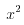 |
| Tiefstellen (Index) | x_2
|
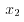 |
| Quadratwurzel | \sqrt{x+y}
|
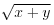 |
| Wurzel | \sqrt[n]{x}
|
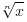 |
| Bruch | \frac{x}{y+2}
|
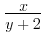 |
| Summe | \sum\limits^{N}_{i=1} x_i
|
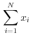 |
| Produkt | \prod\limits^N_{i=1} x_i
|
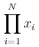 |
| Integral | \int f(x) dx
|
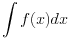 |
| Bestimmtes Integral | \int\limits^{b}_{a} f(x) dx
|

|
| Binominalkoeffizient | {n+m-1}\choose{m}
|
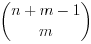 |
| Partielle Ableitung | \frac{\partial f (x,y)}{\partial y}
|
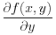 |
| Griechische Buchstaben | \pi \Phi \varepsilon
|
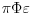 |
| Waagerechte Striche | \overline{m+n}\underline{m+n}
|
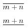 |
| Waagerechte Klammern | \overbrace{a+b+\cdots+z}^{26}\underbrace{a+b+\cdots+z}_{26}
|
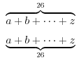 |
| Funktionen | \sin (x)
|
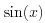 |
Mögliche Werte sind \arccos, \cos, \csc, \exp, \ker, \limsup, \min, \sinh, \arcsin, \cosh, \deg, \gcd, \lg, \ln, \Pr, \sup, \arctan, \cot, \det, \hom, \lim, \log, \sec, \tan, \arg, \coth, \dim, \inf, \liminf, \max, \sin, \tanh
| ||
[Bearbeiten] Links
- http://lefti.amigager.de/latex/ - Ausführlicher LaTeX-Kurs
- http://nirvana.informatik.uni-halle.de/.../latex.php - Online-LaTeX-Compiler
- Wikipedia-Artikel
- Sehr ausfühliches Buch in Wikibooks
- http://www.weinelt.de/latex/ - Eine ordentliche LaTeX-Befehlsübersicht
- Wikipedia Hilfeseite zur Verwendung von TeX auf Wikiseiten
- http://www.grundstudium.info/latex/ - Kleine Einführung in Latex